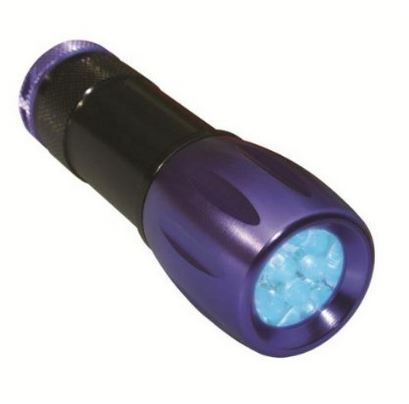

-
Purpose To share steps/ideas I've personally tried to keep my Z leak free.
My black Z has been plagued by cabin leaks this wet winter and I've adopted a method used commonly for detecting coolant leaks.
Normally, common leak areas are: T-top seals, T-top drains, rear side window butyl seal and taillight butyl seal. If you own a Z and live
in a wet climate, you've probably encountered some or all of these. This idea cost less than 20 bucks.
Prep: strip the interior. Optional, but if you are as fed up as i am with leaks, this is a minor inconvenience.
Supplies:
NAPA UV dye, 1oz. PN# 765-2663 ($8.31)
ACE hardware LED UV flashlight. Blacklight Master 9 Led Uv Blacklight Flashlight ($9.99)

Gallon jug or similar
In a dark garage or at night, add 2-3 drops of the UV dye to a gallon of water. As necessary, pour
the water/dye mix over the suspected area. Inside the cabin, use the UV LED flashlight to scan the area
to pinpoint the leak.
Rinsed jug
Potato quality image of water/dye in the drain area.
Taillight leak
_______________________________________________
Reason:
Normally, the source of leaks are easy to detect, however in my case, after i had adjusted the seals, removed and resealed the T-top seals and drains, i was still getting leaks running down the A-pillar to the floor, soaking the ceiling fabric and T-top trim fabric. At the same time, a rear window seal butyl seal had been leaking, the spare tire well had water in it and, the tool-kit was wet.
Using the UV dye i found that the cause of the T-top area leak was not in the seal to seal fitment or the drain (mentioned below). It was that some of the
water running towards the drain and under the edge of the seal was being wicked up under the seal and over the metal body seam. In the area of the t-top corners, it was being wicked up about 2 inches from the drain, running inside the seal and then seeping out just above the drain tube, some dripping and
some running down the A pillar. This mimicked a leaky drain seal.
In the drivers side hatch area, it was wicking up and over the seam near the bottom corner, then and into the lap joints of the inner sheetmetal (not dripping straight down). It was then running down inside the C pillar to the drivers side tail-light area, then dripping onto the taillight housing, mimicking a leaky butyl taillight seal. Contributing to this, i found that the wiring boot for the defrost wires had separated from the body and was allowing some water farther up (I wondered why rust was found on the upper trim clips)
In the passenger side, it was just the taillight butyl seal.
Discovery:
So, in my removing/replacing re-fitting the hatch and T-top seals over the years, the pinch seal between the seam weld and the seal had been compromised and was allowing water to wick beneath. This was remedied using 3M strip calk.
This seems to be a tackier version of the butyl seal used on the rear windows and taillights, but in smaller strips. The pictured box is 60ft,
I only needed about 3-4 inches .
.
Rolled out into a thin 2-3mm bead, it was tucked up in the clip area and then the seal was pressed back into place.
(note: For the hatch, I am using the Mazda MPV seal http://www.xenonz31.com/hatchseal.html)
Same method was used for the T-top wicking leak.
T tops, trial and error.
The drains are vinyl tubing attached to metal tubes welded to the body and then sealed to the outer body with seam sealer.
Commonly the seam sealer cracks over time and allows water inside the A and B pillars.
Admittedly, I'm biased about using rtv silicone in this area as it always went on like cake frosting and was difficult to smooth out in this small area.
It worked, and has worked for others, but i wasn't happy with my results.
I wanted something that was flexible and a bit thinner than RTV.
I found those two attributes in GOOP. At first i had used original GOOP, which dried clear/milky-white. It worked great, the best thing is that it seems
to be self leveling. Applied with a toothpick, it originally was looking like frosting but after a minute or two, it smoothed out to a nice glossy
surface. In troubleshooting the leaky t-top seals, as mentioned above, i had accidentally damaged/lifted the edge of the clear goop.
Fearing it as a place for water to get in, i dreaded trying to remove it. Maybe i got lucky but, I was able to peal it up in one piece (something, in my experience, RTV does not do)
I then wanted the GOOP color to match the body (yeah, nobody sees it…but i do). It is available as SHOE GOO and is made by the same company,
and is the same as* GOOP, just black. (*as told to me by the manufacturers rep back years ago when i was a hardware manager, and at a trade show).
It worked just as great. I had previously scraped out the top layer of cracked seam sealer to make a trough for the sealant to sit in. The shoe goo
was applied and worked around the trough with a toothpick. A few minutes later, it was almost as smooth as glass.
Impressed with it, i went back and re-did the body to-seal joint of the front of the drivers side t-top seal with shoe goo (before i found the 3M product above)
I had re-done all the corners a few weeks previous with 3M super black trim adhesive. In retrospect, i should not have used the shoe goo in this area. It will most likely damage the rubber seal if i ever have a need to remove it in the future.
I look forward to the near future when i can drive my Z with the interior installed and not have to strategically place sham-wows when it rains.
84 AE/Shiro #683/Shiro #820/84 Turbo -
Thanks for sharing. I need to go through all my seals before spring time and do a little restoration as well.87 Turbo - http://z31performance.com/showthread…-turbo-rebuild
88SS - #767
88SS - #824 -
Awesome write up....I need to do this when i get the chance. No time with the z as the daily…today I resorted to a massive sheet of plastic over my car at work, weighted down with a huge drop cloth....dry interior.
Tomorrow I will do the same!
Any tips on removing panels? FSM i presume? LOL -
Great idea the black light dye. I have a leak under the dash, might be a good way to find it.
One problem area I have never seen posted but should be a cause for concern are the 2 rear side marker lights. Both of mine leaked and the water never made it into the car and nothing got wet, BUT, that water stayed within the inner/outer fender and could have caused rot. All I had to do was pull off the inner trim panels/spare tire panel and spray water on the quarter panel. Resealing is easy.Restore it, Don't crush it. They don't make them like this anymore.
Scott
85 Turbo, original owner, restored
93 NA Babied

-
That is absolutely brilliant with the black light idea. I have been trying to trace a leak in the lady's car that seems to come from either the upper butyl seal from the windshield or the seals from the sunroof. Have to try this method out when we get a nice day again and see what I can find! Great write up by the way!Build Log Link: http://z31performance.com/showthread…-VG33-HX35-WIP
-
That's a great idea! I thought about getting a fog machine and setting it off in my car, not sure how successful it will be however.

Copyright © 2006–. All rights reserved. Privacy Policy